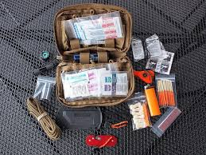

jungle survival

1. Mata pancing / kait.
2. Pisau/sangkur/vitorinoc.
3. Tali kecil.
4. Senter.
5. Cermin suryakanta, cermin kecil.
6. Peluit.
7. Korek api yang disimpan dalam tempat kedap air (tube roll film).
8. Tablet garam, norit.
9. Obat-obatan pribadi.
10. Jarum + benang + peniti.
11. Ponco/Jas Hujan/Raincoat.
Survival kits adalah perlengkapan untuk survival yang harus dibawa dalam perjalanan sebagai alat berjaga-jaga bila terjadi keadaan darurat atau juga dapat digunakan selama perjalanan.
Beberapa contoh survival kits :
1. Mata pancing / kait.
2. Pisau/sangkur/vitorinoc.
3. Tali kecil.
4. Senter.
5. Cermin suryakanta, cermin kecil.
6. Peluit.
7. Korek api yang disimpan dalam tempat kedap air (tube roll film).
8. Tablet garam, norit.
9. Obat-obatan pribadi.
10. Jarum + benang + peniti.
11. Ponco/Jas Hujan/Raincoat.